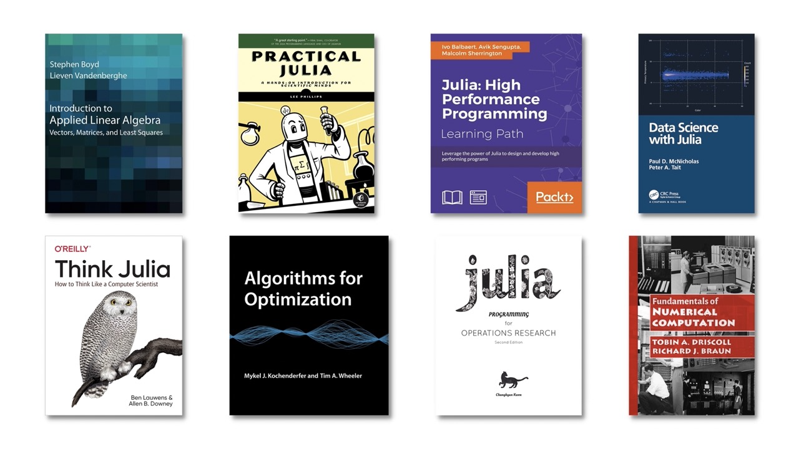

Do you learn best by watching instructor led videos on programming? Check out the free Julia video courses on YouTube, prepared by core Julia developers and community members.
Prefer to learn by doing exercises and getting feedback from a team of welcoming mentors? Check out the Julia Track on Exercism.org.
Want to just give it a shot and dive right into the Julia documentation? Check out the getting started guide.
A growing number of curated Julia courses are freely available on YouTube.
| Julia for Nervous Beginners | A course for people who are hesitant but curious about learning to write code in Julia. Taught by Dr Henri Laurie. |
| Julia for Data Science | From zero knowledge of Julia's Data Science capabilities to training models and performing analysis. Taught by Dr Huda Nassar. |
| Intro to DataFrames.jl | In-memory tabular data in Julia using DataFrames.jl. Taught by Bogumił Kamiński. |
| Computational Modeling (COVID-19) | Computational modeling in Julia with applications to the COVID-19 pandemic. Taught by Alan Edelman & David Sanders. |
| Decision Making Under Uncertainty | Build and solve decision making problems using the POMDPs.jl ecosystem. Taught by Robert Moss. |
| Computational Thinking (MIT) | MIT's open course 18.S191 on computational thinking using Julia, with interactive Pluto notebooks. |
Community members have created a wide range of written tutorials covering Julia from beginner to advanced levels. Once you're familiar with the language, ModernJuliaWorkflows will teach you the secrets of productive Julia development.
Interested in getting a Julia book? Check out the amazing books members of our community have written since Julia was created.

Pluto.jl is a Julia programming environment designed for learning and teaching, and it is a great way to get started with Julia programming, packages and visualisation.
Pluto.jl is easy to install, and you can write interactive documents with no prior experience.
Julia is ready for the classroom. We encourage instructors to participate in the Julia community for questions about Julia or specific packages. This page puts together various resources that instructors and students alike may find useful. See where Julia is being taught today.